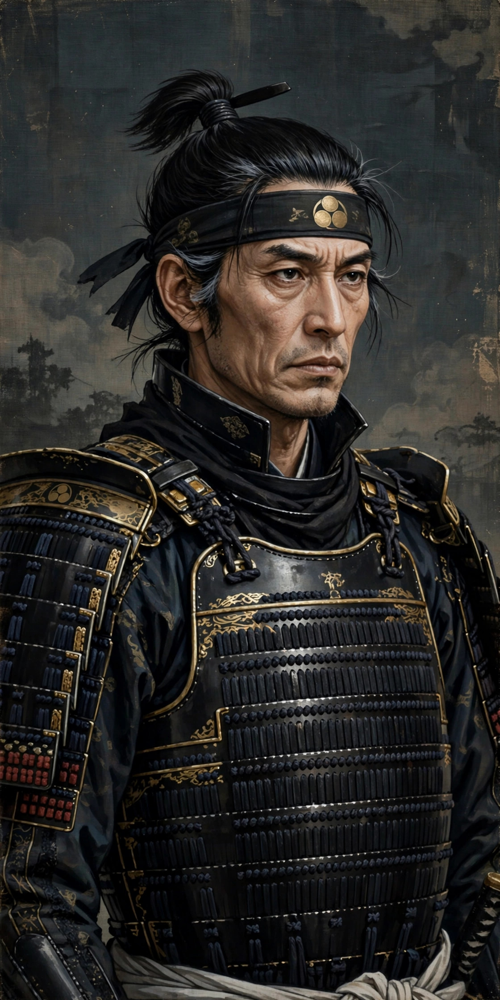

Akechi Mitsuhide
| Akechi Mitsuhide | |
|---|---|
| Born | March 10, 1528 (traditionally) Kani, Mino Province, Japan |
| Died | July 2, 1582 (aged 54) Ogurisu, Yamashiro Province |
| Allegiance | Saitō clan, Oda clan |
| Rank | Daimyō of Kameyama Castle |
| Battles/wars | Siege of Shiga, Battle of Tedorigawa, Honnō-ji Incident, Battle of Yamazaki |

Akechi Mitsuhide (明智 光秀, March 10, 1528 – July 2, 1582), first called Jūbei from his clan and later Koretō Hyūga no Kami (惟任日向守) from his title, was a Japanese samurai general under the daimyō Oda Nobunaga. He is best known for the Honnō-ji Incident of 1582, in which he betrayed and forced his lord Nobunaga to commit suicide, and for his own defeat by Toyotomi Hideyoshi at the Battle of Yamazaki only thirteen days later — a brevity of rule that gave rise to the Japanese expression Mikkatenka ("three-day ruler").
Early life
Mitsuhide was born in Mino Province, in what is now Gifu Prefecture, into the Akechi clan, a branch of the Toki clan. Traditions place his birth at Kani. He served the Saitō clan of Mino, and after Saitō Dōsan's fall he is said to have spent a period as a rōnin, during which he may have served the Asakura clan of Echizen. Around 1568 he entered the service of Oda Nobunaga, who was then rising to power with the aim of unifying Japan.
Service under Nobunaga
Mitsuhide proved himself an able commander and administrator. He campaigned in the Kinai region, fought against the Ikko-ikki and the Miyoshi, and in 1571 took part in the attack on Enryaku-ji on Mount Hiei. He was rewarded with Sakamoto Castle in Ōmi Province and later with territory in Tanba Province, making him one of the few Oda retainers to hold the rank of daimyō over a whole province. He was lord of Kameyama Castle in Tanba. Mitsuhide was also a cultivated man, associated with the tea ceremony and linked by marriage to prominent families; his daughter Hosokawa Gracia (Tama) married Hosokawa Tadaoki.
The Honnō-ji Incident
In June 1582 Nobunaga ordered Mitsuhide to march west to reinforce Toyotomi Hideyoshi, who was fighting the Mōri clan in the Chūgoku region. Instead, on the night of June 21, 1582, Mitsuhide turned his army on Kyoto, surrounding the Honnō-ji temple where Nobunaga was lodged with only a small retinue. Nobunaga perished in the burning temple, either killed or by his own hand; his heir Nobutada also died at Nijō Palace the same morning. Mitsuhide's motives remain one of the famous puzzles of Japanese history: theories include accumulated resentment at Nobunaga's harsh treatment, personal ambition, court intrigue, and fear of demotion or disgrace.
Death
Mitsuhide failed to secure the support of other Oda retainers or the imperial court in time. Hideyoshi made a swift peace with the Mōri and force-marched back, meeting Mitsuhide at the Battle of Yamazaki on July 2, 1582. Mitsuhide's army was routed, and he was killed while fleeing — tradition says by a bandit or peasant soldier near the village of Ogurisu. His head was later displayed at Honnō-ji. His brief ascendancy, lasting about thirteen days, is remembered in the phrase "Mitsuhide's three-day rule" (Mikkatenka).
See also
Honnō-ji Incident · Oda Nobunaga · Toyotomi Hideyoshi · Battle of Yamazaki · Hosokawa Gracia